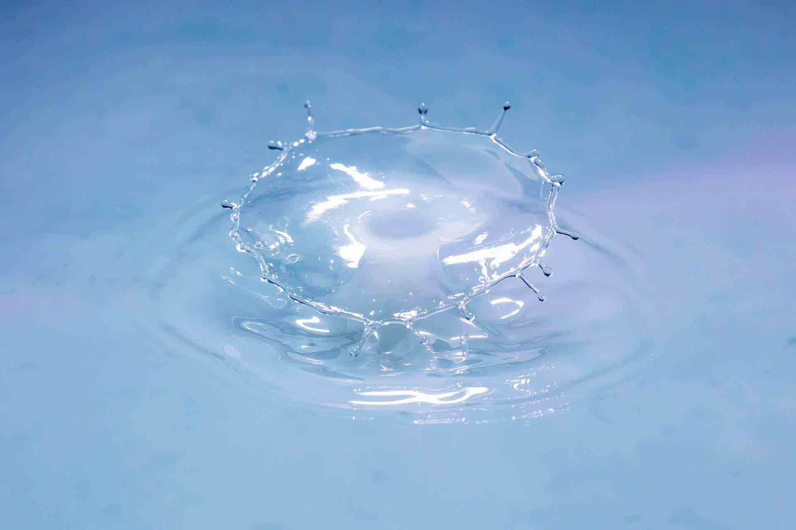

Welcome to the Kids Corner!
Welcome to the Kids Corner! Here you can find projects you can do at home and learn about science along the way. Feel free to explore the site!
Experiments
Here are some experiments you can do at home! See how to make a fluid that is also a solid, and learn the science behind an everyday vegetable 😃
Learn more!
For Teachers and Schools
The museum offers guided tours and maker events for schoolchildren of all ages.
Learn More!Could there be life in space?
Since the dawn of time, we've gazed at the stars, wondering "what's out there?" And while we still cannot know for sure, we can theorize. Come to our planetarium where we explore the cosmos and learn about space! Open every friday, marked blue in the Event Calendar 👽

Making Non-Newtonian Fluids
Have you ever seen a liquid become solid when you hit it? With just a few household components, we can do an experiment to make what's called a "Non-Newtonian fluid", which behaves like a liquid until force is applied! 😄
To make this, you need the following:
- Water
- Cornstarch
- A bowl (bigger is better to avoid spills)
From here, it's as simple as ABC! You need equal amounts of water to cornstarch and we recommend putting down some newspaper or a plastic sheet on your table in case of spills.
Put your cornstarch in the bowl, then add water slowly while mixing at a slow pace. Try tapping the liquid every now and then, until it stops splashing when you do so. It should feel like a "stiff" liquid when stirred and a solid when you tap it.
Congratulations! You just made a Non-Newtonian fluid! 🥳
Red Cabbage Experiment
Here's a neat experiment you can do with a piece of red cabbage! You will need the following:
- A bit of red cabbage
- Boiling water (Note! Boiling water can cause burns. Please have an adult with you to help)
- A jug
- Two glasses
- Baking powder
- Lemon Juice
To begin with, cut your red cabbage into rough pieces. Then put the pieces into your jug, and add the boiling water. Please get an adult to help with the cutting and boiling water, to avoid cuts and burns. Let the cabbage steep in the hot water for 10-15 minutes to cool off. You will have a redish liquid once this is complete.
While the cabbage steeps, add lemon juice and water into one glass and mix baking powder into some water in the other glass. Leave room in the glasses so there's space to add the cabbage water. Once the cabbage water has cooled down, pour it into your glasses and see the magic happen! Afterwards, you can press the button below to see what happens and why!